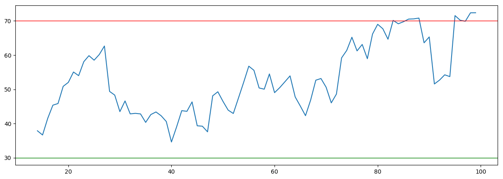
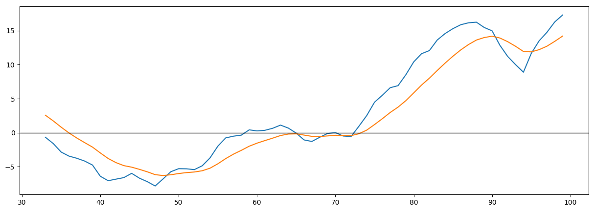

Основные фин.показатели:
| Баланс (квартал), в млн.USD | На 2017-09-30 | На 2017-06-30 | На 2017-03-31 | На 2016-12-31 | На 2016-09-30 |
|---|---|---|---|---|---|
| Всего текущих активов | 119,345.00 | 112,386.00 | 108,794.00 | 105,408.00 | 98,546.00 |
| Недвижимость/Имущество/Оборудование Всего | 56,358.00 | 53,341.00 | 50,321.00 | 47,527.00 | 46,094.00 |
| Всего активов | 189,536.00 | 178,621.00 | 172,756.00 | 167,497.00 | 159,948.00 |
| Общий долгосрочный долг | 3,964.00 | 3,955.00 | 3,937.00 | 3,935.00 | 3,938.00 |
| Всего обязательств | 32,436.00 | 30,335.00 | 27,807.00 | 28,461.00 | 25,845.00 |
| Общий капитал | 157,100.00 | 148,286.00 | 144,949.00 | 139,036.00 | 134,103.00 |
| Cash-flow (квартал), в млн.USD | 9 мес. 2017-09-30 | 6 мес. 2017-06-30 | 3 мес. 2017-03-31 | 12 мес. 2016-12-31 | |
| Поступления от операционной деятельности | 26,823.00 | 16,951.00 | 9,548.00 | 36,036.00 | |
| Поступления от инвестиционной деятельности | -24,427.00 | -10,023.00 | -2,851.00 | -31,165.00 | |
| Поступления от финансовой деятельности | -5,120.00 | -4,414.00 | -1,674.00 | -8,332.00 | |
| Чистый остаток денежных средств | -2,337.00 | 2,793.00 | 5,214.00 | -3,631.00 | |
| Доходы (квартал), в млн.USD | 3 мес. 2017-09-30 | 3 мес. 2017-06-30 | 3 мес. 2017-03-31 | 3 мес. 2016-12-31 | 3 мес. 2016-09-30 |
| Общий доход | 27,772.00 | 26,010.00 | 24,750.00 | 26,064.00 | 22,451.00 |
| Общие эксплуатационные расходы | 19,990.00 | 21,878.00 | 18,182.00 | 19,425.00 | 16,684.00 |
| Операционный доход | 7,782.00 | 4,132.00 | 6,568.00 | 6,639.00 | 5,767.00 |
| Чистая прибыль | 6,732.00 | 3,524.00 | 5,426.00 | 5,333.00 | 5,061.00 |
| Пониженная прибыли на акцию (EPS) без ЧС | 8.97 | 5.01 | 7.75 | 7.62 | 7.25 |
Последние финансовые новости: Показать все
| Дата | Заголовок | Источник |
|---|---|---|
| 2017-10-30 07:55 | Аккумулятор Intel Corporation сохраняет благоприятный способ воспроизведения революции AI. Фонду INTC еще предстоит пройти долгий путь, прежде чем он будет оценен | investorplace |
| Пятница была занята на Уолл-стрит, и все по-прежнему говорят о отличных результатах от Amazon.com, Inc. (NASDAQ:) и Alphabet Inc (NASDAQ:, NASDAQ:) и не очень хороших результатов от Baidu Inc (ADR) ( NASDAQ:) и Mattel, Inc. (NASDAQ:). Но одна компания не получает много прессы, которая должна быть в центре внимания прибыли корпорации Intel (NASDAQ:). Акции INTC выросли более чем на 6% после того, как производитель чипов сообщил о действительно хорошем квартале битвы и повышения. Результаты и сильная реакция на цены на акции резко контрастируют с другими производителями чипов Advanced Micro Devices, Inc. (NASDAQ:). AMD сообщила о сильных доходах в начале недели, и все же акции рухнули. Поскольку эти доходы, акции AMD упали почти на 20%. Фактически, акции INTC выросли более чем на 20% в годовом исчислении, а акции AMD выросли всего на 3% в годовом исчислении. В прошлом году AMD выросла на 300%, в то время как акции INTC набрали всего 5% прибыли. Ясно, что здесь происходит смена охранников. Я думаю, это означает, что сейчас самое подходящее время для покупки в истории роста Intel. Около недели назад я назвал Intel самым дешевым способом играть революцию в искусственном интеллекте. В то время как конкуренты Nvidia Corporation (NASDAQ:) и AMD получили все награды от восходящего тренда AI в 2016 году, Intel теперь, наконец, в разговоре. Компания уже начала иллюстрировать рост в таких критически важных областях, как гипермагистральные центры обработки данных, автоматизированное вождение и искусственный интеллект. Эти доходы продолжались в этом квартале. Бизнес-центр Intel в 2007 году вырос на 7% за счет роста на 24%. Бизнес в Интернете of the Things (IoT) вырос на 23%, чему способствовал широкомасштабный рост розничной торговли, промышленности, видео и информационно-развлекательной системы. Главной новостью здесь является то, что новейшие автомобили Waymo оснащены технологией Intel. Между тем, бизнес памяти в состоянии пожара (рост 37%) и благоприятная ситуация с спросом и предложением, повышающая доходы там, скорее всего, продлится в обозримом будущем. В целом, ориентированная на данные сторона Intel выросла на 15% в квартале и теперь составляет около 45% от общей выручки Intel. Другие 55% доходов поступают с ПК-ориентированной стороны бизнеса, которая стабильна с большой прибылью и денежным потоком. | ||
| 2017-10-30 07:05 | Почему акции Twitter Inc (TWTR) остаются проданными, несмотря на рекордные прибыли. Акции TWTR по-прежнему слабые по доходам от рекламы, росту пользователей и ежедневному участию | investorplace |
| Чирикает в моде? Фондовый рынок так думает. Акции Twitter Inc (NYSE:) растут примерно до 52-недельных максимумов после того, как компания сообщила о гораздо лучше, чем ожидалось, в третьем квартале. Акции TWTR выросли почти на 20% до 20 долларов. К сожалению, 20 долл. США - это уровень, с которым акции TWTR не смогли последовательно торговать выше с конца 2015 года. Да, история роста выглядит неплохо сейчас. Рост доходов приближается к точке перегиба и, скорее всего, снова станет положительным в следующем году. Поля растут выше, и компания находится на грани окончательного получения прибыли по GAAP. С такими критически важными точками перехода в ближайшем будущем соблазнительно покупать. Но акции TWTR по-прежнему торгуются с гипер-богатой оценкой. Доходы от рекламы все еще снижаются, несмотря на исключительно сильный светский фон в цифровой рекламе. Рост пользователей по-прежнему остается проблемой. Ежедневный рост участия является непреодолимым. Новые инициативы роста в видео, скорее всего, будут закорочены усилиями видео более крупных игроков. В большей картине рекордная рентабельность по EBITDA и перспективы рентабельности маржинальных GAAP на самом деле не так важны. Не тогда, когда у вас есть акции, торгующие к северу от 50-кратного финансового дохода за 2017 год, который, как ожидается, вырастет ниже 20% в год в течение следующих нескольких лет. Существует только один способ взглянуть на запас TWTR: он переоценен. Несмотря на массовый рост акций, Twitter становится жертвой всех тех проблем, которые так долго удерживали запас. Доходы от рекламы продолжают снижаться. Это крупный красный флаг, учитывая, что индустрия цифровой рекламы переживает устойчивый рост. Рекламные доллары в массовом порядке протекают от традиционных носителей до цифровых медиа, и все же доходы от рекламы в Twitter по-прежнему снижаются. Для сравнения, Facebook Inc (NASDAQ:) сообщил, что рост рекламных доходов составил почти 50% в прошлом квартале. Snap Inc (NYSE:) сообщила о росте выручки более чем на 150% в прошлом квартале. Alphabet Inc (NASDAQ:) сообщил, что рост рекламных доходов составил почти 20%. Очевидно, что Twitter по-прежнему является уродливым утенком в мире цифровой рекламы. Между тем, ежемесячный рост пользователей остается серым. Ежемесячная абонентская база продолжает расти со скоростью 4-5%. Ежегодная абонентская база Facebook растет со скоростью 17% с гораздо большей базы. И даже несмотря на то, что Twitter любит рекламировать свой ежедневный рост потребления, это тоже неудобно. Ежедневное использование увеличилось на 14% по сравнению с 12% в прошлом квартале и на 14% за квартал до этого. В Facebook, ежедневное использование увеличилось на 17% на гораздо более широкой базе. В Snap ежедневное использование повышается на 21% по сравнению с аналогичной базой. | ||
| 2017-10-29 22:40 | Рейтинг акций Alphabet Inc. (GOOG) подтвержден компаниями Piper Jaffray | dispatchtribunal |
| Компании Piper Jaffray переиздали свой рейтинг избыточного веса по акциям Alphabet Inc. (NASDAQ: GOOG) в отчете, опубликованном в четверг, 19 октября, сообщает The Fly. В настоящее время у них есть целевая цена в размере 1 150 долларов США на акции поставщика информационных услуг. Ряд других брокерских компаний также недавно опубликовали отчеты о GOOG. Pivotal Research повысила свою целевую цену по алфавиту с 940,00 долларов США до 970 долларов США и предоставила рейтинг холдинга в отчете в четверг, 12 октября. UBS AG подтвердил рейтинг покупки и опубликовал целевую цену в размере 1 080 долларов США по акциям Alphabet в отчете во вторник, 25 июля. Компания Needham & Company LLC подтвердила рейтинг покупок и выпустила целевой показатель в размере 1 100 долларов США (ранее ранее от $ 1050,00) по акциям Алфавита в отчете во вторник, 25 июля. J P Morgan Chase & Co переиздал рейтинг покупки акций Alabet в отчете во вторник, 25 июля. Наконец, Goldman Sachs Group, Inc. (The) переиздал рейтинг покупки акций Alabet в отчете во вторник, 25 июля. Один аналитик по ценным бумагам оценил акции с рейтингом продажи, семь дали рейтинг холдинга, а тридцать девять получили рейтинг покупки компании. Компания имеет консенсус-рейтинг Buy и средний целевой показатель в размере 1 038,67 долларов. Алфавит (NASDAQ: GOOG) торговался на 4,80% во время торгов в середине дня в четверг, достигнув $ 1019,27. 5 167 679 акций компании были обменены. Компания имеет 50-дневную скользящую среднюю $ 957,73 и 200-дневную скользящую среднюю $ 935,53. Акции имеют рыночную капитализацию в размере 706,23 миллиарда долларов, соотношение P / E - 36,94 и бета 0,94. Алфавит имеет 12-месячный минимум в 727,54 доллара и 12-месячный максимум в 1 048,39 доллара. Алфавит (NASDAQ: GOOG) последний опубликовал свои квартальные результаты в четверг, 26 октября. Поставщик информационных услуг сообщил о прибыли в размере 9,57 долл. За акцию за квартал, превысив консенсус-оценку в размере 8,31 долл. США на 1,26 долл. США. В течение квартала компания получила доход в размере 27,77 млрд. Долл. США по сравнению с консенсус-прогнозом в размере 27,17 млрд. Долл. США. Азбука имела доходность в размере 14,59% и чистую маржу в размере 20,09%. Квартальный доход фирмы вырос на 23,7% по сравнению с тем же кварталом прошлого года. За тот же квартал в предыдущем году компания заработала $ 9,06. В среднем аналитики по акциям ожидают, что Alphabet опубликует прибыль в размере 30,63 долл. За акцию за текущий финансовый год. НЕЗАКОННАЯ ДЕЯТЕЛЬНОСТЬ: «Alphabet Inc. (GOOG)« Фондовый рейтинг подтвержден компаниями Piper Jaffray »был впервые отправлен Трибуналом по рассылке и является собственностью Трибунала по рассылке. Если вы просматриваете этот отчет в другой публикации, он был украден и переиздан в нарушение международного законодательства о товарных знаках и авторских правах. Правильную версию этого отчета можно прочитать на странице https://www.dispatchtribunal.com/2017/10/29/alphabets-goog-overweight-rating-reaffirmed-at-piper-jaffray-companies.html. В связанных новостях инсайдер Дайан Б. Грин продала 1 863 акций компании в сделке во вторник, 1 августа. Акции были проданы по средней цене 932,38 долл. США, общая сумма сделки составила 1 737 023,94 долл. США. По завершении сделки инсайдер теперь владеет 77 852 акциями компании, стоимость которых составляет 72 587 647,76 долларов США. Продажа была раскрыта в юридической документации в SEC, которая доступна через веб-сайт SEC. Кроме того, генеральный директор Sundar Pichai продал 4 000 акций компании в сделке в среду, 2 августа. Акции были проданы по средней цене 930,46 долларов США, общая сумма сделки составила 3 721 840,00 долларов США. После завершения сделки главный исполнительный директор теперь владеет 1764 акциями акций компании, стоимостью около 1 641 331,44 долл. США. Раскрытие этой продажи можно найти здесь. За последние девяносто дней инсайдеры продали 40,169 акций компании на сумму $ 37,644,407. Корпоративным инсайдерам принадлежит 13,92% акций компании. Ряд хедж-фондов и других институциональных инвесторов недавно купили и продали акции GOOG. Janus Henderson Group PLC повысила свои запасы в алфавите на 759,0% во втором квартале. Janus Henderson Group PLC теперь владеет 3,204,087 акциями акций поставщика информационных услуг на сумму 2 911 734 000 долларов США после покупки дополнительных 2831 099 акций в последнем квартале. В течение второго квартала компания Capital Capital Advisors подняла свои запасы в Алфавите на 87 001,5%. Теперь компания Harbour Capital Advisors LLC владеет 1 993 754 акциями акций поставщика информационных услуг на сумму 2 194 000 долларов США после покупки дополнительных 1 991 465 акций в последнем квартале. В течение второго квартала Koch Industries Inc. увеличила свои запасы в Алфавите на 214 636,6%. Koch Industries Inc. теперь владеет 1161 725 акциями акций поставщика информационных услуг на сумму 1 160 000 долларов США после покупки дополнительных 1,161,184 акций в последнем квартале. BlackRock Inc. повысила свои запасы в Алфавите на 4,8% во втором квартале. BlackRock Inc. теперь владеет 18 058 006 акциями акций поставщика информационных услуг на сумму 16 409 850 000 долларов США после покупки дополнительных 826 480 акций в последнем квартале. Наконец, Capital World Investors увеличила свои запасы в Алфавите на 13,9% во втором квартале. Capital World Investors теперь владеет 6 371 356 акциями акций поставщика информационных услуг на сумму $ 5,789,842,000 после покупки дополнительных 776 853 акций в последнем квартале. 34,50% акций принадлежит хедж-фондам и другим институциональным инвесторам. Профиль компании Alphabet Alphabet Inc является холдинговой компанией. Компании компании включают Google Inc (Google) и ее интернет-продукты, такие как Access, Calico, CapitalG, GV, Nest, Verily, Waymo и X. В сегменты компании входят Google и другие ставки. В сегменте Google представлены его интернет-продукты, такие как поиск, реклама, торговля, карты, YouTube, Google Cloud, Android, Chrome и Google Play, а также его аппаратные инициативы. Количество просмотров: тип = а & ID = 909903 Получайте новости и рейтинги Alphabet Inc. Daily. Введите свой адрес электронной почты ниже, чтобы получить краткий обзор последних новостей и рейтингов аналитиков для Alphabet Inc. и связанных с ними компаний с бесплатным ежедневным электронным бюллетенем MarketBeat.com. | ||
| 2017-10-29 15:20 | Trader Alert: Необычный том, помеченный в Alphabet Inc. (NASDAQ: GOOGL) и Inventure Foods, Inc. (NASDAQ: SNAK) | concordregister |
| Акции Alphabet Inc. (NASDAQ: GOOGL) сегодня видят необычную громкую среднюю торговую сессию. В то время как цена акций двигалась вместе с изменением объема, акции касаются $ 1033,67. Сегодняшний общий объем дня 5180764 сегодня утром контрастирует с трехмесячным ежедневным средним значением 1508,38K. Когда мы разделяем текущий объем на трехмесячный средний объем, мы получаем относительный объем 3,43. Alphabet Inc. (NASDAQ: GOOGL), общая стоимость доллара всех их выпущенных акций составляет 680371,96 млн. Долларов США. В том числе необычный объем, объем акций Alphabet Inc. составляет 30,44% в год. За неделю акции составляют 2,85%. За последний месяц акции компании составили 7,14%, 9,33% за последний квартал, 10,81% за последние шесть месяцев и 26,47% за последний год. Текущий уровень размещения акций Alphabet Inc. (NASDAQ: GOOGL) составляет около 1,71% от 50-дневного максимума и 12,53% от 50-дневного минимума. Инвесторы находятся в состоянии готовности, поскольку акции Inventure Foods, Inc. (NASDAQ: SNAK) испытывают необычный объем во время сегодняшних торгов. В то время как цена акций двигалась вместе с изменением объема, акции касаются 3,99 долл. США. Общий объем дня 1052272 сегодня утром контрастирует с трехмесячным ежедневным средним значением 227,72 тыс. Почему это важно? Объем торгов является чрезвычайно важным для любого инвестора. Наблюдая за тем, сколько акций торгуют руками и ищет какие-либо изменения в этой деятельности, можно обнаружить торговые возможности и более глубокое понимание надежности других индикаторов на складе. Глядя назад Прирост рыночной капитализации Inventure Foods, Inc. (NASDAQ: SNAK), общая стоимость всех выпущенных акций в долларах США составляет 78,68 млн. Долларов США. В том числе необычный объем, объем акций Inventure Foods, Inc. составляет -59,49% в год. За неделю акции составляют -8,28%. За последний месяц акции фирмы составили -14,93%, 2,31% за последний квартал, 14,00% за последние шесть месяцев и -53,44% за последний год. Текущий уровень акций Inventure Foods, Inc. (NASDAQ: SNAK) составляет около -26,52% от 50-дневного максимума и 23,92% от 50-дневного минимума. | ||
| 2017-10-29 09:31 | Обзор акций компании Alphabet Inc. (NasdaqGS: GOOGL) | finnewsweek |
| Alphabet Inc. (NasdaqGS: GOOGL) имеет текущее значение EV или Enterprise 639156168. EV показывает, как рынок присваивает стоимость фирме в целом. EV, как правило, является модификацией рыночной капитализации, поскольку она включает в себя задолженность и денежные средства для оценки оценки фирмы. Отслеживание EV может помочь при сравнении компаний с различными структурами капитала. EV может помочь инвесторам лучше понять, недооценена ли компания или нет. В настоящее время ROIC в формате Alphabet Inc. (NasdaqGS: GOOGL) составляет 0,390866. Среднее значение ROIC 5-го года составляет 0,409220, а коэффициент качества ROIC - 20,804401. ROIC - это коэффициент рентабельности, который измеряет доход, который генерирует инвестиции для тех, кто предоставляет капитал. ROIC помогает показать, насколько эффективно компания превращает капитал в прибыль. ROIC может быть хорошей мерой для просмотра при анализе того, сможет ли компания инвестировать разумно. ROIC также может быть важным показателем для инвестора с ценными бумагами, который пытается определить ров. Alphabet Inc. (NasdaqGS: GOOGL) имеет текущий комбинированный показатель стоимости 67. Используя шкалу от 0 до 100, более низкая оценка будет представлять собой недооцененную компанию, а более высокий балл будет указывать на дорогостоящую или переоцененную компанию. Этот рейтинг был разработан Джеймсом О'Шонесси, используя шесть различных коэффициентов оценки, включая цену на балансовую стоимость, цену продажи, EBITDA EV, цену на денежный поток, цену на прибыль и доходность акционеров. Инвесторы, ищущие ценность на фондовом рынке, могут присматриваться к рангу Magic Formula или рейтингу MF для Alphabet Inc. (NasdaqGS: GOOGL). В настоящее время у компании есть ранг MF 4219. Волшебная Формула была разработана и популярна Джоэлом Гринблаттом в его книге «Маленькая книга, которая бьет рынок». Формула Greenblatt помогает находить акции, которые привлекательно оцениваются с высокой доходностью дохода или сильной прибылью по сравнению с рыночной стоимостью компании. Чтобы выявить возможности на рынке, инвесторы могут искать акции с самым низким комбинированным рейтингом MF. Наблюдатели рынка также могут следить за некоторыми коэффициентами качества для Alphabet Inc. (NasdaqGS: GOOGL). В настоящее время компания имеет коэффициент валовой прибыли (Маркс) 0,330381. Этот расчет основан на исследованиях профессора Университета Рочестера Роберта Нови-Маркса. Маркс считал, что высокий коэффициент валового дохода является признаком качественной компании. Глядя далее, Alphabet Inc. (NasdaqGS: GOOGL) имеет оценку валовой прибыли 2.00000. Эта оценка основана на метрике «Валовой маржи» (Маркс) с использованием шкалы от 1 до 100, где 1 будет считаться положительной, а 100 будет считаться отрицательной. Индекс цен - это коэффициент, который указывает на возврат цены акций за прошлый период. Индекс цен Alphabet Inc. (NasdaqGS: GOOGL) за последний месяц составил 1.07137. Это рассчитывается путем принятия текущей цены акций и деления на цену акций месяц назад. Если коэффициент больше 1, то это означает, что за месяц произошло увеличение цены. Если отношение меньше 1, то мы можем определить, что произошло снижение цены. Аналогичным образом, инвесторы ищут цену акций за 12 месяцев. Индекс цен 12 м для Alphabet Inc. (NasdaqGS: GOOGL) составляет 1.26125. Диапазон цен 52 недели Некоторые из лучших финансовых прогнозов формируются с использованием различных финансовых инструментов. Диапазон цен 52 недели - это один из инструментов, который инвесторы используют для определения самой низкой и самой высокой цены, по которой акции торговались за предыдущие 52 недели. Диапазон цен Alphabet Inc. (NasdaqGS: GOOGL) за последние 52 недели составляет 1.000000. 52-недельный диапазон можно найти в сводке котировок акций. C-Score - это система, разработанная Джеймсом Монтье, которая помогает определить, участвует ли компания в фальсификации своих финансовых отчетов. C-Score рассчитывается по множеству предметов, включая растущую разницу в чистых денежных потоках стипендий, увеличение количества дней в обращении, рост продаж запасов, увеличение активов до продаж, снижение амортизации и высокий общий рост активов. C-Score of Alphabet Inc. (NasdaqGS: GOOGL) - 5.00000. Оценки варьируются от 1 до 6. Если оценка равна -1, то для определения C-Score недостаточно информации. Если число находится в нуле (0), то нет никаких доказательств мошеннической кулинарии книг, тогда как число 6 указывает на высокую вероятность мошеннической деятельности. C-Score помогает инвесторам оценить вероятность обмана компании в книгах. летучесть Волатильность запаса - это процент, который указывает, является ли запас желательной покупкой. Инвесторы смотрят на Volatility 12m, чтобы определить, имеет ли компания низкий процент волатильности или нет в течение года. Волатильность 12 м Alphabet Inc. (NasdaqGS: GOOGL) составляет 17.815700. Это рассчитывается путем принятия еженедельных нормальных доходностей журнала и стандартного отклонения цены акций за год в годовом исчислении. Чем ниже число, считается, что компания имеет низкую волатильность. Волатильность 3m - это аналогичный процент, определяемый дневными нормальными доходами и стандартным отклонением цены акций за 3 месяца. Volatility 3m of Alphabet Inc. (NasdaqGS: GOOGL) - 14.062600. Волатильность 6m такая же, за исключением измеренных в течение шести месяцев. Volatility 6m - 16.475500. | ||
Котировки акций: Показать все
| Дата | Открытие | Минимум | Максимум | Закрытие | Объем |
|---|---|---|---|---|---|
| 2017-10-27 | 1 009.190002 ▲ | 1 008.200012 ▲ | 1 048.390015 ▲ | 1 019.270020 ▲ | 5 160 700.0 ▲ |
| 2017-10-26 | 980.000000 ▲ | 972.200012 ▲ | 987.599976 ▲ | 972.559998 ▼ | 2 042 100.0 ▲ |
| 2017-10-25 | 968.369995 ▼ | 960.520020 ▼ | 976.090027 ▲ | 973.330017 ▲ | 1 211 300.0 ▼ |
| 2017-10-24 | 970.000000 ▼ | 961.000000 ▼ | 972.229980 ▼ | 970.539978 ▲ | 1 212 200.0 ▼ |
| 2017-10-23 | 989.520020 ▲ | 966.119995 ▼ | 989.520020 ▼ | 968.450012 ▼ | 1 478 400.0 ▲ |
Японские свечи, объемы продаж, касательные 20-50

Индекс RSI
Индекс MACD
Сигнальная шкала 1